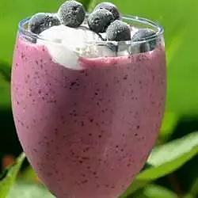

Gordon's Berry Breakfast Drink

Description
It's a recipe for a breakfast drink found on the internet!
Ingredients
- ¾ cup chilled orange juice
- ⅓ cup chilled pineapple juice
- 2 cups vanilla yogurt
- 1 cup frozen blueberries
- ½ cup frozen sliced strawberries
- ½ banana, sliced
Steps
- Place the orange juice,
pineapple juice, yogurt, blueberries,
strawberries, and bananas into a blender.
Cover and blend until smooth. The berry drink will be very thick.
Serve immediately.